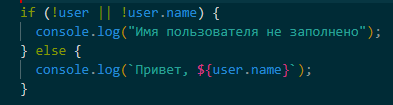
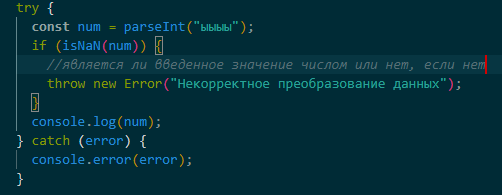

Ответ: находясь в папке с проектом, пишем в командной строке терминала: 1) npm init, после этого отвечаем на ряд вопросов и у нас создастся файл package.json; 2) npm install имя_библиотеки.
Ответ: пишем в командной строке терминала npm -v. Если установлен, то отобразится версия менеджера пакетов.
Ответ: С помощью блока finally можно выполнить очистку всех ресурсов, выделенных в блоке try, и запускать код даже при возникновении исключения в блоке try. В блок finally помещают код, который гарантированно должен быть вызван. Таким кодом, например, является закрытие использованных в блоке try ресурсов для предотвращения утечек. Блок finally часто используют, когда мы начали что-то делать и хотим завершить это вне зависимости от того, будет ошибка или нет.
Ответ: можно сделать проверку на наличие имени пользователя. Если
переменная user не определена или не имеет свойства name, то будет
выведено сообщение об ошибке.

Ответ: с помощью оператора throw. Например, можно записать условие в
if, и в случае его выполнения, задать ошибку throw new
SyntaxError("Данные неполны: нет имени"); или throw new
UserException("Неверно указан номер месяца").
Технически, в качестве объекта ошибки, можно передать что угодно.
Это может быть даже примитив, число или строка, но всё же лучше,
чтобы это был объект, желательно со свойствами name и message (для
совместимости со встроенными ошибками).
Ответ: npm init
Ответ:

Ответ: moment().format('dddd');